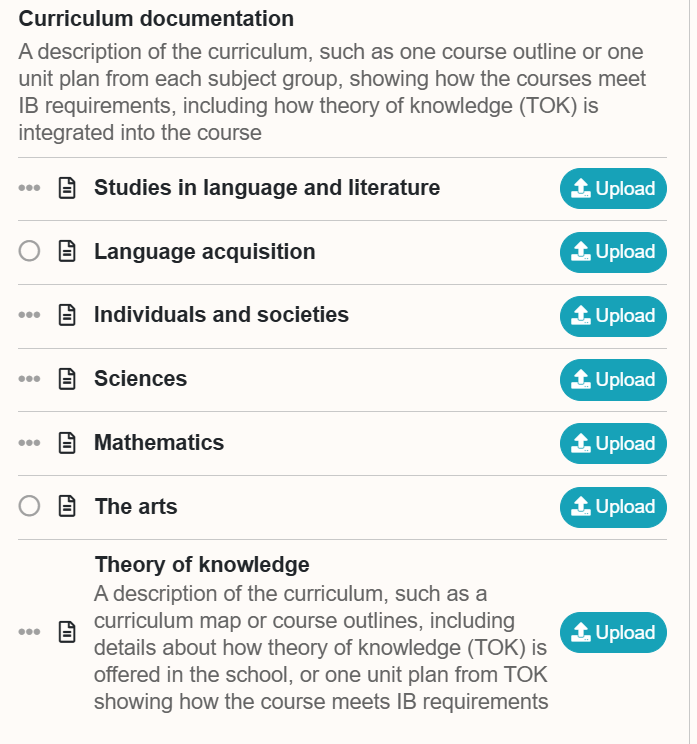

Unit planning
Planning for learning in the DP/CP
Friday 20 November 2026
40-minute session
Friday 20 November 2026
40-minute session
Thank you for preparing examinations and supporting invigilation.
Marking, reports and the final weeks of the year are still ahead.
Nearly there. Thank you for everything you are doing.
What should students know, understand and be able to do?
How do teaching, inquiry and assessment connect?
How can we show that our curriculum meets IB expectations?

Content, skills and objectives
Big ideas and inquiry questions
Evidence, checks and feedback
Learning sequence and differentiation
ATL development; meaningful TOK in DP subjects
What worked, what changed, what next?
Modelling functions, choosing and evaluating models
HL extends to logarithmic, logistic and piecewise modelsThey simplify, approximate and depend on assumptions
Choose, interpret, justify and evaluate a model
Students compare possible models, fit them with technology, interpret results and question their assumptions.
Explain model choices, check confidence, analyse errors and use scaffolds or HL extensions as needed.
Discuss evidence, truth and the limits of claims based on mathematical models.
Use the existing Mathematical Modelling unit to illustrate the fields.
Show the process; do not attempt to build an entire unit live.
Open in Toddle ↗Work in Toddle